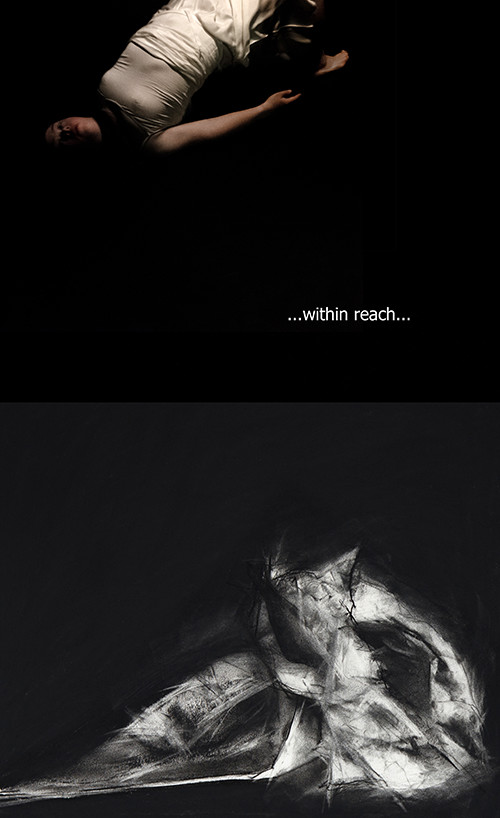

	<div id="oneCol" class="row">
    <div class="large-12 end columns">
		<div class="large-12 end columns">
            <h3>Exhibition February 2015</h3>
             <p>Joint exhibition with Claire Christie Sadler Feb 11-28  2015<br />
            North Wall Gallery, Summertown, Oxford.</p>
          <p>In recognition of the individual who feels 'out of reach' and isolated yet longs to find a reality where potential strengths and self-worth are acknowledged and encouraged. This struggle to come 'within reach' is explored metaphorically through drawings (Claire),  photographs and words (Judie).<br />
            Inspired by community and personal experiences.<br />
            </p>
		</div>
        <div class="center">
            <a href="002.html" title="View next Within Reach photograph"></a>


            <span class="links"><a href="002.html">next</a></span>
        </div>
	</div>
</div>

